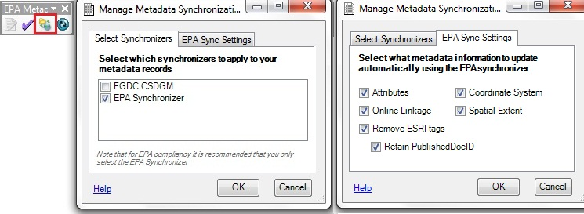
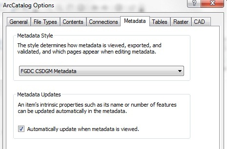
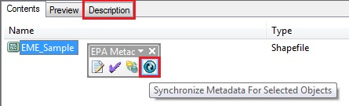

EPA Metadata Editor (EME)
The EPA Synchronizer
The EPA Synchronizer Manager provides users with the capability to
customize how metadata synchronizers work in ArcCatalog. Users can manage
which synchronizers to apply to their metadata record and they may also
specify which fields to synchronize in the metadata record. This provides
users with the ability to synchronize portions of their metadata record with
the underlying data set, as opposed to completely enabling or disabling the
use of synchronizers.
What are Synchronizers?
Synchronization is the process by which properties of a data set
are read from the data and written into its metadata (e.g., bounding
coordinates, spatial reference information, attributes, etc.). ESRI's
ArcCatalog uses synchronizers to insert information into your metadata.
Synchronizers are considered useful because they remove the
burden of documenting some portions of your metadata record by automatically
inserting information into your record. They also ensure consistency with the data set, so that changes to the data are applied to the metadata. They may be considered problematic because
they can insert information into your record that is not compliant with FGDC
standards. The EPA Synchronizer helps users find a middle ground by providing
users with the capability to control which elements are synchronized with the
data set. This allows users to retain information for important elements, but
also avoids inserting unnecessary information into the
metadata record.
Note that the EPA Synchronizer cannot be used to
modify synchronization that has already been applied to a record. The
synchronization parameters should be set before editing records in ArcCatalog.
If you have a metadata record that was already modified by ArcCatalog using
the FGDC and/or ISO synchronizers and would like to remove the elements that
were inserted into your record by ArcCatalog, please use the "Remove ESRI
Elements" button (help for this button is located within the 'Interface Features' topic).
Also note that the EPA Synchronizer will continue to operate on your metadata record every time the information is
viewed in ArcCatalog. This will override any information in your metadata
record for the fields you have selected to synchronize (e.g., coordinate
system information). If you would like the synchronization process to be
discontinued, you will need to disable the ArcCatalog metadata synchronizers
by un-checking the creating and updating metadata boxes described below.
Using the EPA Synchronizer
The EPA Synchronizer is accessed from the EPA metadata
toolbar. Clicking the EPA Synchronizer button from the toolbar will open the EPA Synchronizer interface. Users can select which synchronizers to use and which elements to synchronize.

To use the EPA Synchronizer, take the following steps:
Set the EPA Synchronizer as the Default Synchronizer
- Open the EPA Synchronizer Manager by clicking on the "EPA Synchronizer
Manager" button from the Metadata Toolbar
- Select the "Select Synchronizers" tab from the EPA Synchronizer Manager
interface
- Select the EPA Synchronizer and deselect all other available
synchronizers
Select Which Attributes to Synchronize
- Select the "EPA Sync Settings" tab from the EPA Synchronizer Manager
interface
- Choose which elements to synchronize with your data set
- Click 'OK'
Apply Synchronization
- Synchronization can either be applied manually or it may be enabled as a background process.
- The background process applies synchronization every time the data set is viewed in the description tab.
- To enable background synchronization, go to Customize->ArcCatalog Options and select the 'Metadata' tab
- Enable the checkbox for 'Automatically update when metadata is viewed.'
- Select the data set, and view the metadata record in the description tab. This will automatically apply synchronization.

- To manually synchronize metadata, select the data set in the contents window, and click the 'Synchronize Metadata' button in the EPA Metadata Toolbar. This will force synchronization for your data set and metadata record, using the settings you have specified in the EPA Synchronizer Manager.
